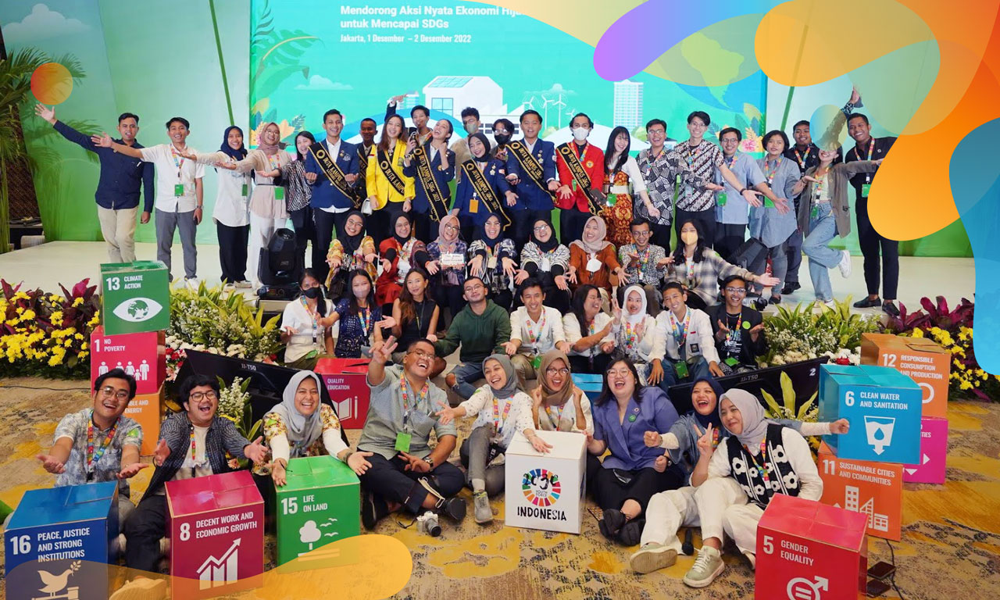

Kerjasama Bilateral adalah kerjasama antar 2 negara untuk mencapai tujuan bersama yang menguntungkan kedua pihak. Dalam pencegahan kemiskinan, beberapa aksi nyata yang sudah diambil oleh negara Indonesia dengan kerjasama Bilateral adalah proyek-proyek besar kolaborasi dengan Jepang. Berbagai pembangunan infrastruktur mulai dibahas dan bahkan sudah ada yang mulai dibangun. Dengan berbagai infrastruktur baru, orang-orang miskin dan berkebutuhan khusus mulai bisa mengakses layanan-layanan umum seperti transportasi cepat kereta dan mengurangi marginalisasi.
Kerjasama Regional adalah kerjasama yang melibatkan beberapa negara dari kawasan atau wilayah tertentu. Beberapa contoh kerjsama Regional adalah ASEAN, APEC, EU, AFTA, dan EFTA. Dalam upaya penanggulangan kemiskina, beberapa kerjasama Regional menetapkan berbagai kebijakan untung meringankan utang negara miskin/berkembang. Di dalam ASEAN, terdapat 2 negara dengan tingkat kemiskinan yang cukup tinggi dikarenakan populasinya yang terlalu besar yaitu negara Indonesia dan negara Filipina. ASEAN berusaha untuk memperbaiki ketidakrataan kekayaan ini.
Kerjasama Multilateral adalah kerjasama antar 3 negara atau lebih. Contoh dari kerjama Multilateral ini yaitu UN (United Nations). Hubungan Multilateral ini mendirikan beberapa program dan lembaga yang bertujuan untuk meringankan beban kemiskinan sebuah negara. Beberapa yang sudah didirikan contohnya Bank Dunia dan IMF. Kedua ini ingin mencapai tujuan bersama yang saling menguntungkan tanpa kemiskinan bagi seluruh dunia dengan meringankan utang, tagihan, dan berbagai macam lainnya.
Sumber: https://sdgs.bappenas.go.id/
1. Dengan pendidikan yang berkualitas, peluang kerja akan lebih terbuka dan meningkatnya keterampilan.
2. Mengeluarkan program beasiswa dan pendidikan gratis bagi anak-anak yang membutuhkan.
1. Dengan layanan kesehatan yang berkualitas dan terjangkau akan memotivasi masyarakat untuk tetap sehat
dan lebih produktif.
2. Mengeluarkan program kesehatan gratis atau subsidi bagi keluarga dan orang-orang miskin yang
membutuhkan.
1. UMKM dapat mengembangkan lapangan kerja dan menggerakan ekonomi lokal.
1. Memberdayakan perempuan dapat meningkatkan pendapatan rumah tangga dan mengurangi kemiskinan.
2. Mengeluarkan program kesetaraan upah, partisipasi ekonomi, dan kesempatan pendidikan bagi perempuan.